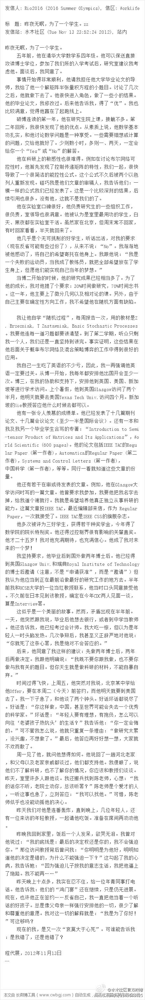

我也没理解。为什么啊？当高中老师比当大学老师好在哪？ //@王风风风:拉老师，我的重点不在于他去了哪里，而是楼主这位大师对这么简单的人生问题都理解不透。这个问题人家好莱坞一个戏子（GWH的剧本是Matt Damon自己写的）早就解决了，我们大师的人文素质以及对人性理解的增加还任重道远啊。@水木社区官微:#水木社区 >> 知性感性 >> 职业生涯 #昨夜无眠，为了一个学生。zz 网页链接 （分享自 @水木社区官方微博）发信人: Rio2016 (2016 Summer Olympics), 信区: WorkLife 很值得深思！ 